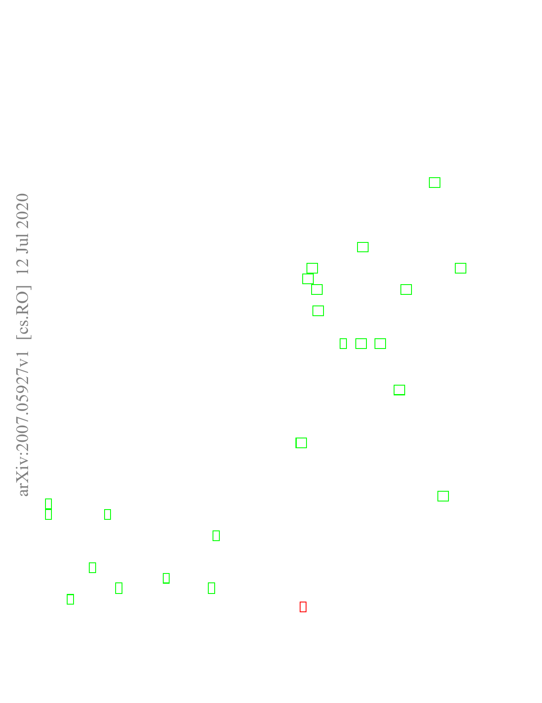

1
A Three-limb Teleoperated Robotic System with
Foot Control for Flexible Endoscopic Surgery
Yanpei Huang1, Wenjie Lai1, Lin Cao1*, Jiajun Liu1, Xiaoguo Li1, Etienne Burdet2* and Soo Jay Phee1
Abstract—Objective: Flexible endoscopy requires high skills
to manipulate both the endoscope and associated instruments.
In most robotic flexible endoscopic systems, the endoscope and
instruments are controlled separately by two operators, which
may result in communication errors and inefficient operation.
Method: We present a novel tele-operation robotic endoscopic sys-
tem that can be commanded by a surgeon alone. This 13 degrees-
of-freedom (DoF) system integrates a foot-controlled robotic
flexible endoscope and two hand-controlled robotic endoscopic
instruments (a robotic grasper and a robotic cauterizing hook).
A foot-controlled human-machine interface maps the natural foot
gestures to the 4-DoF movements of the endoscope, and two hand-
controlled interfaces map the movements of the two hands to the
two instruments individually.
Results: The proposed robotic system was validated in an ex-
vivo experiment carried out by six subjects, where foot control
was also compared with a sequential clutch-based hand control
scheme. The participants could successfully teleoperate the endo-
scope and the two instruments to cut the tissues at scattered target
areas in a porcine stomach. Foot control yielded 43.7% faster task
completion and required less mental effort as compared to the
clutch-based hand control scheme.
Conclusion: The system introduced in this paper is intuitive for
three-limb manipulation even for operators without experience
of handling the endoscope and robotic instruments.
Significance: This three-limb teleoperated robotic system enables
one surgeon to intuitively control three endoscopic tools which
normally require two operators, leading to reduced manpower,
less communication errors, and improved efficiency.
Index Terms—Three-tools operation, foot control, teleopera-
tion, endoscope manipulation, robot-assisted surgery.
I. INTRODUCTION
Compared to the laparoscopic procedures with rigid tools,
flexible endoscopic instruments can easily access the region
of operation through a natural orifice with less invasiveness
[1]. Flexible endoscopic robotic systems such as MASTER
[2] and ViaCath [3] enable intuitive bi-manual teleoperation of
the flexible endoscopic instruments. However, the endoscope
operation is complex and skill-demanding [4], and these
systems typically require an endoscopist assisting the surgeon
by directly holding and manipulating the endoscope at the
patient side [5]. Robotized endoscopic systems such as Endo-
scopic Operation Robot (EOR) [6], Robotic-assisted flexible
endoscope (RAFE) [7], motorized endoscope [8], and i2 snake
robot [9] facilitate the endoscope operation through teleoper-
ation with one or two hands interfaces. These platforms also
1Authors are or were with the School of Mechanical and Aerospace
Engineering, Nanyang Technological University, Singapore. 2Etienne Burdet
is with the Department of Bioengineering, Imperial College of Science Tech-
nology and Medicine, London, UK. *Corresponding authors’ email address:
e.burdet@imperial.ac.uk; lin.cao@usask.ca.
require the surgeon to cooperate with an assistant in order to
control the two surgical instruments and the endoscope, which
may cause miscommunication and errors [10].
Multimodal interfaces could alleviate this problem by en-
abling a surgeon to control three instruments without the
need of an assistant. Various hand-free robotic assisted camera
systems have been developed for laparoscopic or otolaryn-
gological surgery with a rigid endoscope. Hence, EndoAssist
camera-holding robot [11] is controlled by head motion of the
operator; Automatic Endoscope Optimal Position (AESOP)
system [12] uses verbal commands; RoboLens [13], FREE-
DOM [14] robotic system is controlled by foot motion; the
LapMan [15] and FIPS endoarm [16] robots equipped finger
joysticks controlled by fingertip movement; Some systems use
eye gaze [17] to control the laparoscopic camera fields.
Similarly, a few solutions have been proposed to enable the
surgeon to control the endoscope in flexible robotic endoscopic
surgical systems [6], [18]–[20]:
• In the hand-independent interface control, similar to
approaches used for rigid endoscopes, head, foot, finger
or voice is used to command the endoscope. The latest
version of STRAS system [21] includes two small four-
way finger joysticks on the hand controllers to operate the
endoscope using two thumbs of both hands. Each joystick
can control the two-DoF motion of the endoscope.
• Separate interface hand control. In the Medrobotics Flex
[18] system, the operator firstly navigates the endoscope
to the target area using a joystick and then switch to the
two manual instruments.
• Clutch-based hand control, with clutch buttons or pedals
in the master console to activate the swapping to the
third tool. For systems such as K-Flex [19], the operator
uses the same hand interface to control a surgical tool or
flexible overtube, swapped by a foot clutch.
However, the low bandwidth, limited spatial resolution,
sequential control, or the need for swapping procedures with
these interfaces may prevent the surgeon from using them
intuitively and efficiently while operating with their hands.
Our goal is to develop a robotic system that enables the
surgeon to intuitively control the endoscope and two surgical
instruments simultaneously. The developed system is sketched
in Fig. 1, consisting of a foot-controlled robotic endoscope and
a two-hand-controlled robotic platform with two instruments.
The new robotic system provides the operator with control
over 13 DoFs: the endoscope (four DoFs), the grasper (five
DoFs), the cauterizing hook (four DoFs). The control concept
is similar to walking for handling objects, where the surgeon